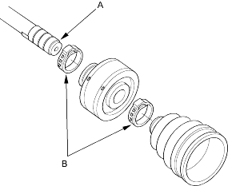
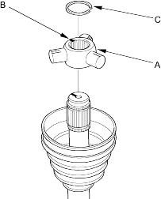
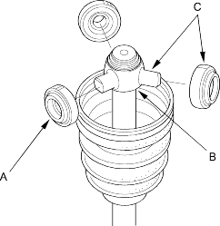

Special Tools Required
- Boot band tool, KD-3191 or equivalent commercially available
- Boot band pincers, KENT-MOORE J-35910 or equivalent commercially available
- Boot band pincer, commercially available
NOTE: Refer to the Exploded View as needed during this procedure.
Inboard Joint Side
- Wrap the splines with vinyl tape (A) to prevent damage to the inboard boot and dynamic damper.

- Install the dynamic damper, inboard boot and the ear clamp bands (B) onto the driveshaft, then remove the vinyl tape. Take care not to damage the inboard boot and dynamic damper.
- Install the spider (A) onto the driveshaft by aligning the marks (B) on the spider and the end of the driveshaft.

- Fit the circlip (C) into the driveshaft groove. Always rotate the circlip in its groove to make sure it is fully seated.
- Fit the rollers (A) onto the spider (B) with their high shoulders facing outward and note the following items:
- Reinstall the rollers in their original positions on the spider by aligning the marks (C).
- Hold the driveshaft pointed upward to prevent the rollers from falling off.
